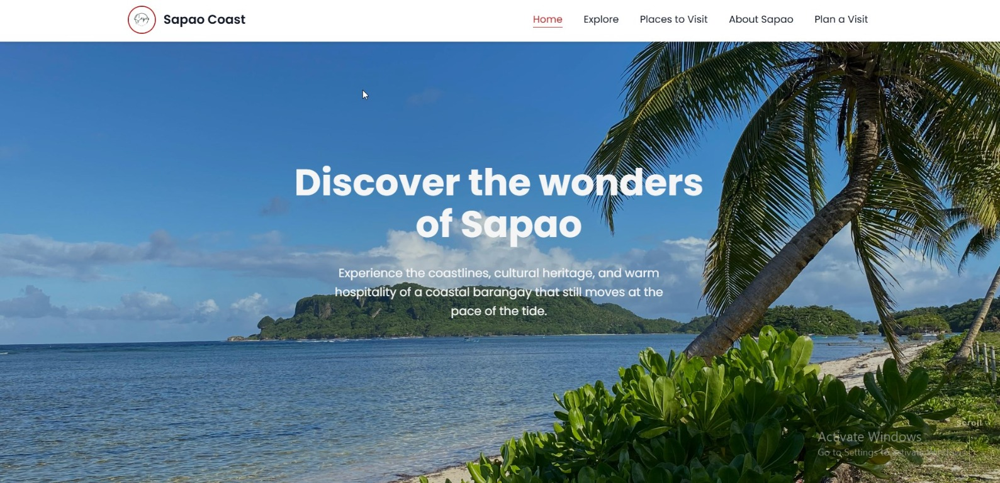

CASE STUDY / COMMUNITY WEBSITE
Sapao Coast
A community website created with my BSIT section for our Human-Computer Interaction (HIC) class at Eastern Samar State University to introduce Sapao’s coastline, cultural heritage, and visit-planning information. I worked as a researcher and developer.

Problem & Project Context
Our section created a website that brings together information about Sapao’s coastline, cultural heritage, hospitality, and places to visit. It gives visitors one place to explore the destination and plan a visit.
Project Objectives & Target Users
The site is for people learning about Sapao and considering a visit. Its information is organized around Home, Explore, Places to Visit, About Sapao, and Plan a Visit.
My Role
Sapao Coast was a group project for our HIC class, completed with my BSIT section. I worked as a researcher and developer. I gathered information about Sapao’s coastline, cultural heritage, and hospitality. I also deployed the site on Vercel.
Design Process & Information Architecture
The site is structured around Home, Explore, Places to Visit, About Sapao, and Plan a Visit. This navigation connects destination discovery with practical visit-planning information.
Interface Patterns
The homepage introduces Sapao’s coast and directs visitors to the destination’s main information areas. The navigation keeps exploration, places, background, and visit planning easy to find.
Final UI
The Sapao Coast homepage, built by our section, is shown below. It introduces the destination and links to the site’s main exploration and planning sections.
Homepage
Tech Stack & Deployment
Frontend: HTML, CSS, JavaScript (no framework)
Backend: None
Database: None
Hosting: Vercel
View the Sapao Coast live site .